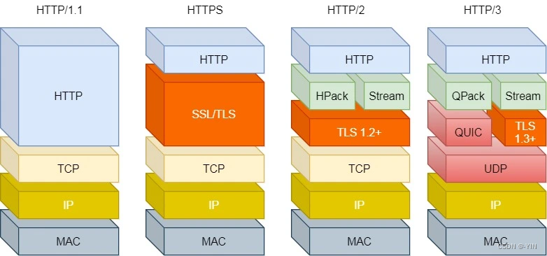

重生之我在大学重修高中信息
TCP/IP
感觉这篇已经讲得很清楚了
网址（url），域名，ip地址，dns，hosts之间的关系
HTTP
HTTP特点：
基于TCP协议: 面向连接，安全
TCP是一种面向连接的(建立连接之前是需要经过三次握手)、可靠的、基于字节流的传输层通信协议，在数据传输方面更安全
基于请求-响应模型: 一次请求对应一次响应（先请求后响应）
请求和响应是一一对应关系，没有请求，就没有响应
HTTP协议是无状态协议: 对于数据没有记忆能力。每次请求-响应都是独立的
无状态指的是客户端发送HTTP请求给服务端之后，服务端根据请求响应数据，响应完后，不会记录任何信息。
- 缺点: 多次请求间不能共享数据
- 优点: 速度快
Java早已考虑到这个问题，并提出了使用会话技术(Cookie、Session)来解决
HTTP请求数据格式
| 请求方式 | 请求说明 |
|---|---|
| GET | 获取资源。 向特定的资源发出请求。例：http://www.baidu.com/s?wd=itheima |
| POST | 传输实体主体。 向指定资源提交数据进行处理请求（例：上传文件），数据被包含在请求体中。 |
GET方式的请求协议：

请求行 ：HTTP请求中的第一行数据。由：
请求方式、资源路径、协议/版本组成（之间使用空格分隔）- 请求方式：GET
- 资源路径：/brand/findAll?name=OPPO&status=1
- 请求路径：/brand/findAll
- 请求参数：name=OPPO&status=1
- 请求参数是以key=value形式出现
- 多个请求参数之间使用
&连接
- 请求路径和请求参数之间使用
?连接
- 协议/版本：HTTP/1.1
请求头 ：第二行开始，上图黄色部分内容就是请求头。格式为key: value形式
- http是个无状态的协议，所以在请求头设置浏览器的一些自身信息和想要响应的形式。这样服务器在收到信息后，就可以知道是谁，想干什么了
常见的HTTP请求头有:
1
2
3
4
5
6
7
8
9
10
11
12
13Host: 表示请求的主机名
User-Agent: 浏览器版本。 例如：Chrome浏览器的标识类似Mozilla/5.0 ...Chrome/79 ，IE浏览器的标识类似Mozilla/5.0 (Windows NT ...)like Gecko
Accept：表示浏览器能接收的资源类型，如text/*，image/*或者*/*表示所有；
Accept-Language：表示浏览器偏好的语言，服务器可以据此返回不同语言的网页；
Accept-Encoding：表示浏览器可以支持的压缩类型，例如gzip, deflate等。
Content-Type：请求主体的数据类型
Content-Length：数据主体的大小（单位：字节）
举例说明：服务端可以根据请求头中的内容来获取客户端的相关信息，有了这些信息服务端就可以处理不同的业务需求。
比如:
- 不同浏览器解析HTML和CSS标签的结果会有不一致，所以就会导致相同的代码在不同的浏览器会出现不同的效果
- 服务端根据客户端请求头中的数据获取到客户端的浏览器类型，就可以根据不同的浏览器设置不同的代码来达到一致的效果（这就是我们常说的浏览器兼容问题）
- 请求体 ：存储请求参数
- GET请求的请求参数在请求行中，故不需要设置请求体
POST方式的请求协议：

- 请求行(以上图中红色部分)：包含请求方式、资源路径、协议/版本
- 请求方式：POST
- 资源路径：/brand
- 协议/版本：HTTP/1.1
- 请求头(以上图中黄色部分)
- 请求体(以上图中绿色部分) ：存储请求参数
- 请求体和请求头之间是有一个空行隔开（作用：用于标记请求头结束）
GET请求和POST请求的区别：
| 区别方式 | GET请求 | POST请求 |
|---|---|---|
| 请求参数 | 请求参数在请求行中。 例：/brand/findAll?name=OPPO&status=1 |
请求参数在请求体中 |
| 请求参数长度 | 请求参数长度有限制(浏览器不同限制也不同) | 请求参数长度没有限制 |
| 安全性 | 安全性低。原因：请求参数暴露在浏览器地址栏中。 | 安全性相对高 |
HTTP响应格式

响应行(以上图中红色部分)：响应数据的第一行。响应行由
协议及版本、响应状态码、状态码描述组成- 协议/版本：HTTP/1.1
- 响应状态码：200
- 状态码描述：OK
响应头(以上图中黄色部分)：响应数据的第二行开始。格式为key：value形式
- http是个无状态的协议，所以可以在请求头和响应头中设置一些信息和想要执行的动作，这样，对方在收到信息后，就可以知道你是谁，你想干什么
常见的HTTP响应头有:
1
2
3
4
5
6
7
8
9Content-Type：表示该响应内容的类型，例如text/html，image/jpeg ；
Content-Length：表示该响应内容的长度（字节数）；
Content-Encoding：表示该响应压缩算法，例如gzip ；
Cache-Control：指示客户端应如何缓存，例如max-age=300表示可以最多缓存300秒 ;
Set-Cookie: 告诉浏览器为当前页面所在的域设置cookie ;
- 响应体(以上图中绿色部分)： 响应数据的最后一部分。存储响应的数据
- 响应体和响应头之间有一个空行隔开（作用：用于标记响应头结束）
状态码
| 状态码分类 | 说明 |
|---|---|
| 1xx | 响应中——临时状态码，表示请求已经接受，告诉客户端应该继续请求或者如果它已经完成则忽略它 |
| 2xx | 成功——表示请求已经被成功接收，处理已完成 |
| 3xx | 重定向——重定向到其它地方：它让客户端再发起一个请求以完成整个处理。 |
| 4xx | 客户端错误——处理发生错误，责任在客户端，如：客户端的请求一个不存在的资源，客户端未被授权，禁止访问等 |
| 5xx | 服务器端错误——处理发生错误，责任在服务端，如：服务端抛出异常，路由出错，HTTP版本不支持等 |
常见的响应状态码
| 状态码 | 英文描述 | 解释 |
|---|---|---|
| 200 | OK |
客户端请求成功，即处理成功，这是我们最想看到的状态码 |
| 302 | Found |
指示所请求的资源已移动到由Location响应头给定的 URL，浏览器会自动重新访问到这个页面 |
| 304 | Not Modified |
告诉客户端，你请求的资源至上次取得后，服务端并未更改，你直接用你本地缓存吧。隐式重定向 |
| 400 | Bad Request |
客户端请求有语法错误，不能被服务器所理解 |
| 403 | Forbidden |
服务器收到请求，但是拒绝提供服务，比如：没有权限访问相关资源 |
| 404 | Not Found |
请求资源不存在，一般是URL输入有误，或者网站资源被删除了 |
| 405 | Method Not Allowed |
请求方式有误，比如应该用GET请求方式的资源，用了POST |
| 428 | Precondition Required |
服务器要求有条件的请求，告诉客户端要想访问该资源，必须携带特定的请求头 |
| 429 | Too Many Requests |
指示用户在给定时间内发送了太多请求（“限速”），配合 Retry-After(多长时间后可以请求)响应头一起使用 |
| 431 | Request Header Fields Too Large |
请求头太大，服务器不愿意处理请求，因为它的头部字段太大。请求可以在减少请求头域的大小后重新提交。 |
| 500 | Internal Server Error |
服务器发生不可预期的错误。服务器出异常了，赶紧看日志去吧 |
| 503 | Service Unavailable |
服务器尚未准备好处理请求，服务器刚刚启动，还未初始化好 |
状态码大全：https://cloud.tencent.com/developer/chapter/13553
HTTP版本
HTTP 有多个版本，目前广泛使用的是 HTTP/1.1 和 HTTP/2，以及正在逐步推广的 HTTP/3。
- HTTP/1.1：支持持久连接，允许多个请求/响应通过同一个 TCP 连接传输，减少了建立和关闭连接的消耗。
- HTTP/2：基于二进制分帧，支持多路复用，允许同时通过单一的 HTTP/2 连接发起多重的、独立的、双向的.交流。
- HTTP/3：基于 QUIC 协议，旨在减少网络延迟，提高传输速度和安全性。
111